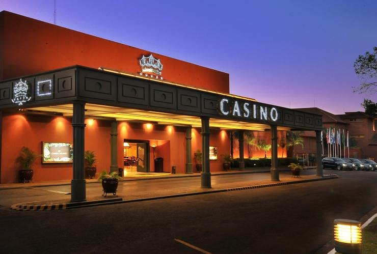

|
Lots of people travel to Argentina Puerto Iguazu city which is located in South America
to see the beautyfull iguazu waterfalls and other tourist attractions. There are laxarious
hotels and resturants. One of the best resturants is the Ambeinte interno. It mostly serves
spanish food and is owned by a spain chef. It has the best interior decorations. Has up to
about 20 chefs and 30 weitresses. It can accommodate up to 100 people.

There is also the iguazu grand hotel and casino

tourists are also given cruizes to see the iguazu waterfalls. They are also given the fullmoon tour of the falls.

|